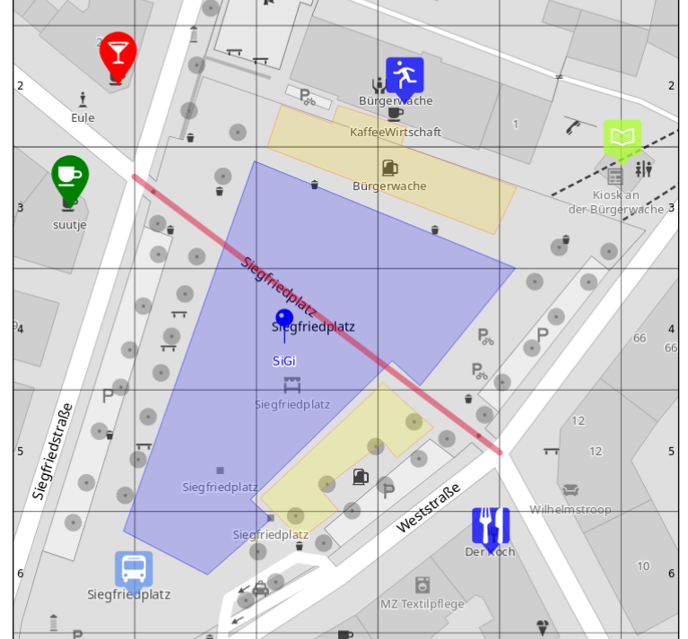
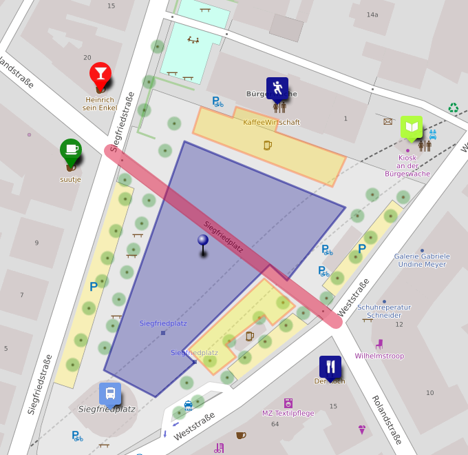

Work in progress
Overview
Creating a map - step by step
Select a map area or upload a file
At the very beginning the map area to be rendered needs to be determined. For this there are currently four alternatives, available as different form tabs:
-
Directly select a rectangular area on an online map
-
Use a city or place name to look up its boundaries in the OSM database
-
Upload a GPX track, the map area will be the tracks bounding box
-
Upload an Umap file, the map area will be determined by the contained data
When uploading a file you can still select a different, e.g. smaller or larger, map area afterwards.
Directly Select Area
Here you can select a rectangular map area. The map shown is a typical “slippy” online map, on the left you have buttons for zooming in and out, a button to detect your current location, and a search button to search for a place by name.
By default the full visible map area is selected here, but you may also use the [Select area] button to enable a more sophisticated area selection tool.
When pressing the [Select area] button the user interface changes a bit, you’ll now see a highlighted rectangular area that marks the actual selected area. You can drag the four corners of the rectangle around to change its shape and size, and you can move the complete area by dragging it along by the dotted marker in its upper left corner.
With [Select area within current zoom] you can make the full visible area the new selection, and the [Remove selection] brings you back to the original mode.
The four number fields below the map show the current min. and max. latitude and longitude of your selected area.
When you are satisfied with your selection you can use the [>] button on the right to move on to the next form step.
City Search

On the “City search” tab you can enter a city or place name in the input field, if the administrative borders of that city or place are known to OpenStreetMap these can be used to determine the map area to use automatically.
A dropdown below the field will show possible matches for your input as you type. Only the matches that are printed in black are selectable. The matches printed in grey are either place nodes for which no border information is available in OSM yet, or the place area is too large to be printed with this web service.
Upload a GPX Track
Here you can upload a GPX file containing GPS data and waypoints. The track, and all named waypoints, will then be rendered on top of the base map.
For now you can only select a single GPX file, support for multiple track files may be added in the future.
The upload form performs some basic checks, so it will complain when the uploaded file is not in GPX format, or does not contain any usable tracks.
Note that the file will be stored on the web server, and that the map generated from it (but not the actual GPX file) will be visible to everyone. So do not upload any sensitive data you don’t want to to be seen in public, or that you don’t have the permission for to share it in public.
Once a valid GPX file has been selected the form switches back to the area selection tab, and will show a preview of the file contents and the optimal map area to display all contained GPS data.
If you want to render a different area, e.g. just a smaller part of the track, or a larger area showing more context beyond the track area itself, you can change the selection area accordingly.
The actual final result of a rendered GPX track may look like the example to the left.
Upload a Umap File
Here you can upload a file exported from Umap, a service that lets you create online maps with your own markers and drawings on top. We provide you with a way to also use this fine tool to produce customized printed maps with your own data on top, and not only online maps.
To create an export file from a Umap you created you need to click on the “Embed and Share” Icon on the left side of the Umap interface, and then use “Download Data → Full map data” in the sidebar on the right hand size.
The upload form performs some basic checks, so it will complain when the uploaded file is not in Umap format, or does not contain any usable data.
Only data directly added using the Umap drawing tools will be rendered for now. Umap also allows to import external data on the fly, like data form CSV files, or dynamic queries against an Overpass API Server, this kind of data is not supported by this service yet though, and so will not be part of the generated print map.
Note that the file will be stored on the web server, and that the map generated from it (but not the actual Umap file) will be visible to everyone. So do not upload any sensitive data you don’t want to to be seen in public, or that you don’t have the permission for to share it in public.
Like with GPX uploads, once a valid Umap file has been selected for upload the form will switch back to the area selection tab and will show a simplified preview of the uploaded data.
You can modify the selected area if you only want to show part of the Umap information, or actually want to show it in a larger map context.
 
An actually rendered Umap map may look like the example on the left hand side, while the right hand side shows how the original online Umap looks like. The results are not completely the same , especially when it comes to line stroke width, but this is mostly due to difference in size an resolution of the target devices, paper vs. screen.